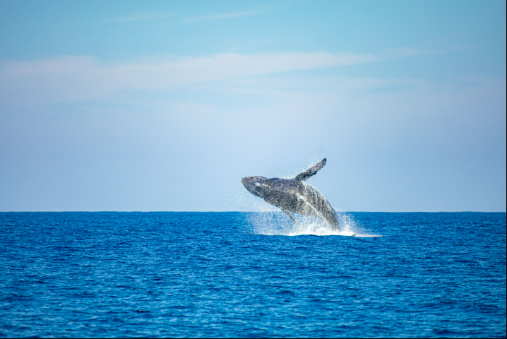
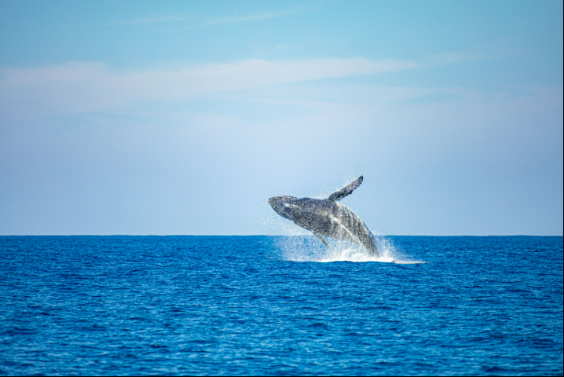

Los Cóbanos Reef & Beach
Arrecife y Playa Los Cóbanos
 

Snorkel volcanic reefs, discover rich marine life, and enjoy fresh seafood on El Salvador’s Pacific coast.
Practica snorkel en arrecifes volcánicos, descubre una rica vida marina y disfruta de mariscos frescos en la costa pacífica de El Salvador.